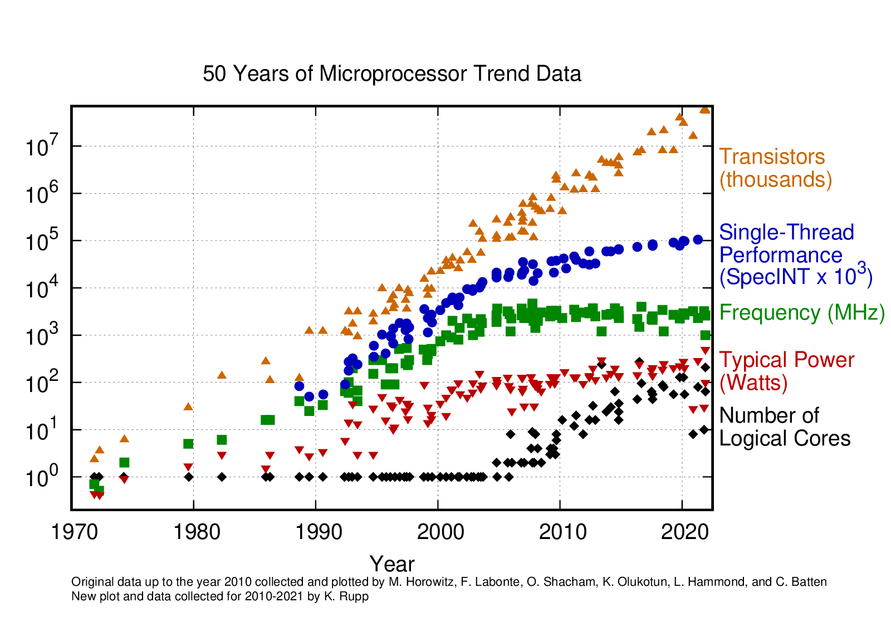

20260825 - What is HPSC? And Vectorization¶
What is Scientific High-Performance Computing?¶
Scientific computing is the combination of three different areas
Domain Science
Applied Math
Computer Science
The domain science defines what we’re trying to do; it’s the purpose and the ultimate driving force
Applied math helps takes the models and theorems of the domain science and break it down into computable algorithms
Computer science analyzes how to implement the resulting algorithms onto actual existing hardware (and evaluates which algorithms perform better on real-world hardware)
True “mastery” of scientific computing requires at least “mediocrity” in all three areas; it is an interdisciplinary area by it’s nature.
Generally you’ll be stronger in one area than the others, but it’s required to have an understanding of all sides.
A short little history trip about science.¶
Modern scientific research can be divided into three main “modes”: Experimental, theoretical, or computational
Mode |
Definition |
|---|---|
Experimental |
Directly testing a hypothesis in the real world via observations of a controlled situtation |
Theoretical |
“Natural Philosophy”, conjecture about the physical world based on some model of the real world, often driven by heavily mathematical analysis |
Computational |
Theoretical physics, but without closed form solutions; we do “experiments” based on “theory” |
Why computational science?¶
Theory is limited because math is hard
There comes a point where the math to solve certain problems is too hard
Either provably impossible to obtain closed form solution, or practically too annoying/difficult
Experimental is limited because the real world is messy
Measuring a physical system necessarily affects the system
Experimental campaigns take significant time to prepare and execute
Resulting data can often be somewhat limited; you have to know what you want to measure ahead of time
Experimental is limited by what can be done physically
Computational research is a combination of theoretical and experimental
We take the theoretical model, do some mathemagic (usually discretize) to make the model easier to work with, and run “complex” virtual experiments using the easier math
Like theoretical, it is based on some underlying mathematical model of how the world works
However, it can answer questions that are intractable to do in a pure mathematical sense
Like experimental, we generally setup an “experiment”, run the experiment, then observe the action after the fact.
However, the experiment is virtual and can be idealistic and perfectly “clean”
Computational research is not the end-all-be-all:¶
Theory allows for a far more “direct” understanding of the scientific models
Instead of noticing “hey, this quantity is usually proportional to this other one”, we can make direct, explicit statements about the relationship
Experiments will always serve as a ground truth for computational (and theoretical) science
It’s still dependent on a model of the world and is not perfect
While much slower to setup and not as flexible, certain physical experiments are signficantly faster to run than computational ones
Who uses compuational science and why?¶
Computational science has been around for a lot longer than digital/artificial computers
Plenty of scientific discoveries done by painstaking hand calculations
Example, the discovery of Neptune (1840s) was done by using Newton’s law of gravity, “guessing” the location of the unknown planet (to be named Neptune), computing how it would effect Uranus’s orbit, then checking it against observations
Some fields are heavily driven by computational work. Example, climate modeling.
Theory is too hard
The behavior of climate systems is far too complex to do purely theoretically
Plenty of underlying theory to it, but can’t prove useful conclusions purely with math
Experiments are arguably harder
Can do small scale experiments and data gathering to inform models
Can’t exactly do a planet scale experiment without a few billion people becoming unwitting participants
Some may argue we’ve already been doing some of that experimentation with green house gases….
The trends we seek to find are on the scale of decades or centuries
Thus, computational is the primary tool used in this field to determine how things work.
What about the “high performance” part?¶
So we’ve covered the “scientific” and “computing” part of “scientific high-performance computing”:
The “science” part refers to the purpose of the computations
To perform some kind of “virtual” scientific experiment
Also includes quantitative analysis related to scientific results (which may or may not be generated from computational methods)
The “high performance” part comes in the desire to get results efficiently
Everyone wants results yesterday
Better efficiency can also result in novel scientific experiments as well
Allows for finer resolution simulations, more experiments can be run, or even pushing experiments that were not possible before
Example: Anton Anton is a super computer built explicity for molecular dynamics research
MD computation can be categorized as a N-body simulation
Many dispersed “bodies” in space, which all have an effect on each other based on distance
Heavily dependent on processor communication due to global nature of inter-atomic forces
Thus, latency becomes the bottleneck more than FLOPs or communication bandwidth
Anton was built with custom hardware to tackle large-scale, low latency computation for pharmaceudical research
Allowed running significantly longer and more accurate MD simulations than before
As such, “high performance” does not have strict definition; it’s whatever gets the job done faster
I’ll submit the following definition:
High performance computing (not necessarily scientific) generally refers to large-scale compututations (usually numerical in nature), occuring over multiple computers networked together, where the computations are heavily coupled/syncronized.
The distinction of “heavily coupled” goes into discussion of how parallelizable algorithms are, which will be discussed later
Briefly, programs who’s work is “embarassingly parallel” is not heavily coupled.
Example, scaling of a website backend to handle multiple clients is generally embarassingly parallel.
Kubernetes isn’t really HPC; in HPC parlance, it’s a job scheduler, not an HPC application
Review of last weeks CPU Basics…¶
Vectorization¶
Currently, our instructions work on single (scalar) arguments, one at a time. How would hardware manufacturers make their hardware faster?
Just crank the frequency!
https://github.com/karlrupp/microprocessor-trend-data

Denard scaling (related to the frequency) stopped working around 2005-2010, so we can’t just keep cranking the frequency.
What if we could do more work for every single clock cycle?
Motivating example¶
Take a look at the following C code:
double a[1000], b[1000], c[1000];
void foo() {
for (int i=0; i<1000; i++) {
c[i] = a[i] + b[i];
}
}
What if instead of doing the additions one at a time, we could do them in chunks, all at one time?
This works as vectorization or vector instructions.
By requiring the CPU to do the exact same operation to multiple pieces, of data, we can spend less time in computation.
This is also known as SIMD (Single Instruction, Multiple Data).
How do we “turn on” vector instructions?¶
Compiler flags! An example:
-O3 -march=native
-O3enables the conversion of for loops into vector instructions (among many other things)-march=nativeallows the compiler to limit compability to the CPU architecture that the compiler is running on.There are wide variety of vector instructions our there and a single CPU will almost never support all of them
By default,
gcc(and most compilers) will default to the lowest common standard, which often has very limited
https://godbolt.org/z/6cE41bedv
Intrinsics¶
Compiler flags are what you will almost certainly want to use to enable this. However, if you need/want even more explicit control, you can use Intrinics, which are C function that map directly to assembly instructions.
Examples can be seen on the Intel Intrinsics website.
Classes of vector instructions¶
Vector instructions, like normal instructions, can only operate on registers on the CPU.
Thus, vector instructions require special registers which store more than a single scalar data byte.
Most vector instructions can be split into how large their registers are (e.g. how much data they compute at once)
Can also be described by their “lanes”, or the number of scalars they can work on simultaneously.
Instruction Set |
Register size (bits) |
Number of double precision Scalars |
Register names |
|---|---|---|---|
SSE |
128 |
2 |
|
AVX/AVX2 |
256 |
4 |
|
AVX-512 |
512 |
8 |
|
Note: The xmm# register is also used for scalar operations. Just because you see an xmm# register does not mean that it’s using vector instructions. Most CPU architectures on modern platforms have AVX/AVX2 compatability, so expect to see the ymm# registers used for this
Data ordering¶
The multiple scalar values needed for a SIMD instruction can be packed into the SIMD register either one at a time, or all at once.
The latter is much faster than the former, but the speedup requires that the data in memory be stored in the packed order as what is loaded into the SIMD register.
The example above has the data for a, b, and c arrays stored packed together, e.g.
Thus, when we want to do the computation, the arrays in memory are already stored in the order we want for the vectorization.
double abc[3000];
void foo_blocked() {
for (int i=0; i<1000; i++) {
abc[2000 + i] = abc[0 + i] + abc[1000 + i];
}
}
Contrast with interleaving the arrays together, e.g. a code like this:
double abc[3000];
void foo_other() {
for (int i=0; i<1000; i++) {
abc[i*3 + 2] = abc[i*3 + 0] + abc[i*3 + 1];
}
}
where the data layout now looks like this:
When this data is read into registers, it must now be rearranged, such that all the a elements are in one register, all the b elements are in a different register, and then for writing back to memory, the must be re-interleaved.
https://godbolt.org/z/s4zbvTsrz
Note: Modern CPU SIMD instructions have special load instructions for handling the stided memory access demonstrated above. However, this requires that compilers know that the stride length is some compile-time constant and is generally much more costly to actually run and do. Also, this feature may not be available on GPUs.